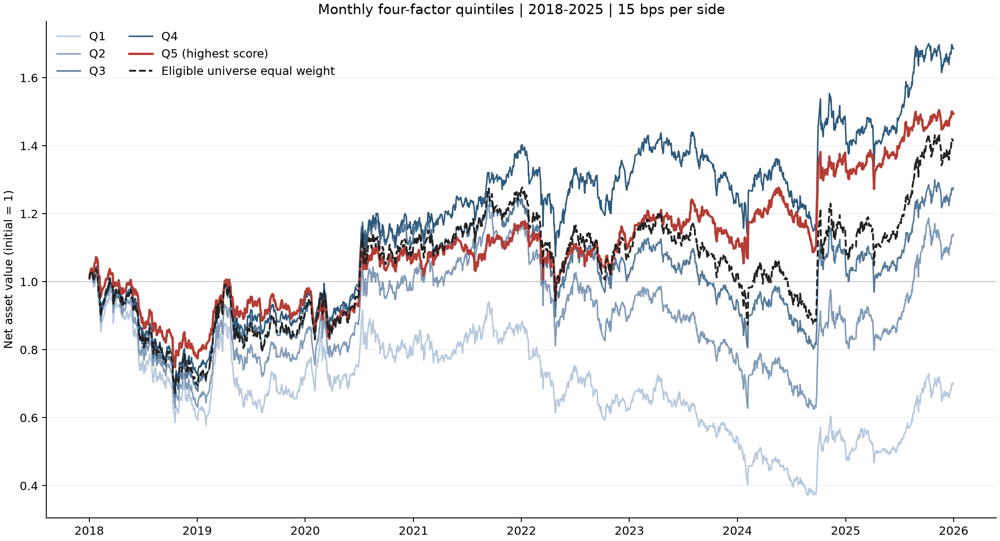

做了什么
- 使用 BaoStock 构建 2018–2025 年沪深 300 与中证 500 历史成分股池（1,344 只证券、约 243 万行日线），按月采用当时成分股并剔除 ST 与停牌，降低幸存者偏差
- 实现动量、反转、低波动、低换手四因子的月度截面排名与分层回测：月末收盘出信号、下一交易日开盘成交，含 15 bps 成本及涨跌停、停牌约束；综合分数平均 RankIC 0.082（ICIR 0.41），信号主要来自低波动与低换手（二者秩相关 0.67）
- 完成成本敏感性、分段表现、剔除缺价证券与月度超额 t 检验：Q5 年化高于同池等权基准 0.70 个百分点，但月度超额不显著（t≈-0.02），单边成本升至 30 bps 时优势消失；配套 7 项测试，含未来函数反面检验

结论
高分组年化收益比同池等权基准高约 0.70 个百分点，但月度超额在统计上不显著；单边成本升到 0.3% 时优势消失. 这是研究练习，不是可交易策略.
局限
没有样本外验证；缺价与退市处理简化；未做行业与市值中性化；等权等选择未检验替代方案.
说明
本项目在 AI 编程助手协助下完成编码；研究设计、检查与验收由作者负责.